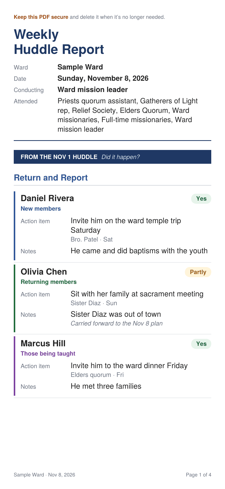
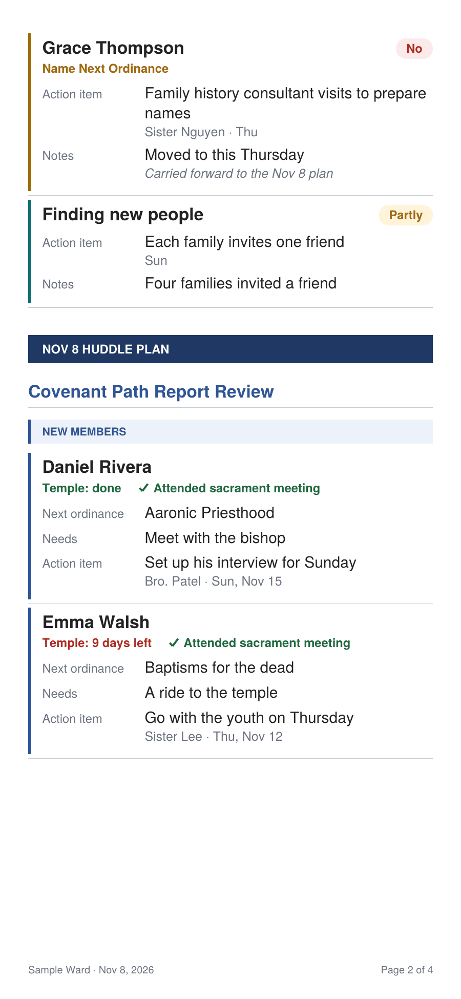

Private by design: everything stays on this phone, and nothing is saved online. The only copy that leaves is the PDF you choose to share.
Load an agenda
Loading replaces the agenda on this phone. You can undo it right after.
Another leader texted you a handoff link? Copy it, then tap Paste a handoff.
Use the agenda PDF that was sent out, for example if this phone lost its agenda.
Principles for Effective Coordination
Meet weekly & stay connected: Brief weekly meetings; use chats between meetings.
Take notes & make specific plans: Record assignments and concrete weekly steps.
Follow up & act beyond meetings: Regularly check progress and fulfill commitments during the week.
Involve youth: Give youth responsibilities; coordinate with ward council, temple, & family history leaders.
Share experiences: Share inspiring stories and blessings.
Prepare ahead
Keep the meeting quick. Open the agenda before the meeting starts; ward council has already updated the names and needs. Come already thinking about who is on the agenda and what each person needs, so the meeting is spent planning, not typing.
Tips for Finding New People to Teach
Consider part-member families you can serve and help. The bishopric, ward clerk, or others on the ward council can help provide lists of these families and individuals that you could visit, serve, and invite to participate.
Look at upcoming activities, meetings, and classes that the ward could invite people to attend. Consider publishing those activities on your ward web page, where available (see “Share Ward Activities”), and encourage members to invite those who are less familiar with the Church to attend.
Plan which members or ward organizations you could encourage to follow Christ by living the principles of love, share, and invite (see Preach My Gospel, 168). Plan how to and who can share those principles with them and how to follow up and continually support them (see “Ways to Love, Share, and Invite”).
Encourage members to simply invite people to attend church with us.
Avoid turning the principles of love, share, and invite into a program. Find ways to encourage members to make those principles an ongoing part of how they live because of their love and discipleship of the Savior. More ideas on how to do this are included below.
15 Ideas to Encourage Your Ward or Branch to Share the Gospel
Here are 15 ideas that the weekly coordination group could do to encourage members to love, share, and invite. Use them for inspiration, or apply what would work best for your ward!
Visit a Class: Take a few minutes to visit a class, quorum, or organization at the beginning of the second hour to highlight upcoming opportunities to love, share, and invite. Consider sharing a brief experience where living those principles blessed those who are not familiar with the Church.
Reach Out: Send messages to members expressing love and appreciation. Ask them if anyone has come to their mind recently that might need to feel their love or join them for an activity in their home or at the church. Whether they have someone in mind or not, continue to encourage them to pray and look for opportunities to love, share, and invite.
Know the Calendar: Remind members of any upcoming opportunities to share with friends and neighbors (for example, a special sacrament meeting like the Primary program, a ward activity, a dinner or home evening at your house, a baptismal service, a sports night, self-reliance or other classes, and so on).
Help Speakers Invite Friends: Contact the members who have been asked to speak in sacrament meeting, and encourage them to invite someone less familiar with the Church to come hear them.
Plan Visits: Each week in the coordination meeting you could decide which members you could visit to discuss love, share, and invite and ask them to think about the opportunities they have to live those principles and share the gospel. Ensure in the coordination meeting that you have planned who will follow up with those families!
Assist the Missionaries: Help members go out on a visit with the missionaries! While you’re together, drop by to say hi to a neighbor or friend.
Share Activities: If your ward is using the activity web page (see the Activity Sharing page), ensure members are aware of it and that the bishopric announces often that activities are found on that page that we can invite friends and neighbors to attend.
Social Media: Encourage members who use social media to include aspects of the gospel that are part of their day-to-day lives and start conversations with those who like and comment on the posts.
Love Your Neighbor: Encourage members to be aware of any neighbors who have had a significant life event (for example, recently married, had a child, recently moved in, and so forth). Make a simple plan to serve and show love to them.
New Move-Ins: Encourage members to share with the ward mission leader those people who are moving in and new housing developments that are being built. Coordinate inviting members to welcome these people to the area, offer help, and share information about the neighborhood, Sunday meetings, and ward activities (see Activity Sharing). Involve the missionaries.
Be Welcoming: Introduce yourself to people you don’t know at church or who are coming for the first time. Help them feel welcomed and loved! Encourage the ward to do the same.
Stay in Touch: Encourage members to stay in touch with those that live far away. If they ever have a need the missionaries can help with, members can introduce them to the missionaries with this online tool.
Service Projects: Organize a service project and invite neighbors and friends. Include a prayer and a quick spiritual thought at some point! You could do the same with an ongoing sports night.
Daily Routine: Encourage members to think about people they have contact with because of their daily routine. Brainstorm how they could live the principles of love, share, and invite with those people.
Phone or Social Contacts: Encourage members to open their list of phone contacts or social media friends and see if they can help someone feel loved with a brief message or share anything that they would appreciate. In some cases, they might want to invite them to an activity in their home or at church.
Sample agenda
Made-up names in a made-up ward. This is what the PDF you send each week looks like. Pinch to zoom in.


How to use
Watch the training video
About 4½ minutes: the ward mission leader’s weekly flow and how to use the agenda.
Who uses this agenda: The person conducting the huddle is responsible for obtaining the information from ward council, filling out the entire agenda, and saving and sharing it with the right people. This is usually the ward mission leader. If he isn’t there, the elders quorum representative conducts.
!Never add confidential information to this agenda.
Who · What
Ward Council
Reviews the Covenant Path Report, then selects who to focus on and what each person’s next ordinance is.
How · When
Weekly Coordination MeetingThe huddle
Huddles decide how and when to help.
The app opens to three things:Ward council, Huddle and Send. Use them in that order each week. There’s no date to set: the PDF is stamped with the day you send it.
Ward council: Tap Ward council. Every name is in one list with only what ward council decides: the name, the next ordinance and the need. Check the names against the Covenant Path Report (in Tools), add anyone new and remove anyone no longer listed. If a name had an assignment from the last huddle, it shows there too; mark it if you already know how it went.
Huddle: Tap Huddle. Take attendance in Huddle Details, then go down the four sections: mark Return and Report, check sacrament and temple attendance, and plan one action item per person (who will do it, and when). Text each assignment before everyone leaves.
Send: Tap Send. Update the Covenant Path Report in Tools first (the button is right there), then share the PDF with the bishop-approved list, the stake presidency and the full-time missionaries, and include yourself. Sending finishes the huddle: its assignments move into Return and Report for next time, and the names and needs stay.
During the week: As people report back, mark their assignments in Huddle → Return and Report, or on their name in Ward council. It’s the same mark either way.
The huddle has four sections: Return and Report, Covenant Path Report Review, Name Next Ordinance, and Find New People to Teach. Open them in any order. Tap Mark section done as you finish each one, so you can see what’s left; it’s optional and doesn’t stop you from sending. The checks clear when you send. Tap Back to return to the list. Checked one by mistake? Tap Undo right away, or open the section and tap Mark as not done. If something is still missing, like an action item, the section’s status stays orange.
Add it to your Home Screen first, before you fill anything in. Tap Add to Home Screen at the top (iPhone: use Safari; Android: use Chrome). From then on, open it from the new icon. On iPhone, anything saved in Safari won’t carry over to the app.
Don’t delete the Home Screen icon. Deleting it erases the agenda on that phone. PDFs you already sent aren’t affected, and you can bring the agenda back with Load from a PDF.
Before the huddle, tap Ward council. It lists every name with the three things ward council decides: who, their next ordinance, and what they need. Fill it in before or during ward council. Everything you enter here is already on the huddle’s cards when you tap Huddle.
No date to set. The huddle is dated the day you send it. If you’re sending on a different day than you met, tap Huddle, then the small Huddle date line at the top, and pick the right day.
First time? Just start filling it in with the names from the Covenant Path Report. To try it with sample names first, tap Try a practice week at the top of How to use.
Names kept from the last huddle are marked From the last huddle. Compare them to this week’s Covenant Path Report in Tools (tap Open the Covenant Path Report): add anyone new, remove anyone no longer listed, and update each person’s next ordinance and need.
Last huddle’s assignment shows under a name that had one, with Yes, Partly and No. If you followed up during the week, mark it there; otherwise leave it for the huddle.
New members: enter the baptism date. The red Temple attendance box counts down the 30 days to baptisms for the dead and stays red, week after week, until you check it.
Those being taught: in the huddle’s Covenant Path Report Review, check Committed to baptism and enter the scheduled baptismal date once it’s set. Once they’re baptized, tap Convert to new member to move them to New members.
No one in a list this week? In the huddle’s Covenant Path Report Review, tap Confirm none this week on that list. The PDF then shows it was reviewed and empty; a list left blank prints Not reviewed.
Name Next Ordinance holds the three focus names from ward council, with each person’s next ordinance and need.
Names nobody has updated in 4 weeks ask “Still on the Covenant Path Report?” Tap Keep or Remove. After 5 weeks with no changes, a name is removed automatically.
Someone else running the meeting? Tap Hand off (next to Send) and text them the link. On Android it loads right away. On iPhone the link opens in Safari: they tap Copy handoff, open the app from the Home Screen, then tap Load a handoff or PDF (on the opening screen) → Paste a handoff. They can hand it back the same way. After they send it, open the PDF they sent you and tap Load a handoff or PDF → Load from a PDF; your app sets up the next huddle from it.
At the meeting, tap Huddle and take attendance. Tap Huddle Details, check who’s conducting, then tap everyone who attended. Until you do, Huddle Details shows Attendance not taken yet in orange.
Under Return and Report, confirm each item Yes, Partly or No; the card turns green, amber or red.
Marked Partly or No? Tap Carry forward to this huddle to add it to this huddle’s plan without retyping. It’s marked Carried from last huddle on the card and on the PDF. Changed your mind? Tap Undo to take it back off the plan.
Update the Covenant Path Report with any needs that have been fulfilled, including sacrament attendance. Tap Open the Covenant Path Report at the top of Covenant Path Report Review to jump to Member Tools.
Plan the week. Each name card has two halves. The top, Ward Council · Who & What, is filled in before the meeting. The bottom, Huddle · How & When, is the huddle’s: check Attended sacrament if they were there, then add one action item, who it’s assigned to, and when. Tap Add action for more.
Text this assignment: once a card has an action and someone assigned, tap it before everyone leaves. Messages opens with the name, the action and when (no needs or notes); pick who to send it to. The card then shows Texted.
The huddle can add any new needs it spots in the same Needs box. To relay something back to ward council, tap + Add a note for ward council.
Under Plans to Find New People to Teach, write the ward’s plan for the week, then add any applicable assignments. Tap Tips for finding new people to teach for ideas.
Send it. From the huddle’s list or the opening screen (tap Back), tap Send. Update Tools first: the Send screen has an Open the Covenant Path Report button for sacrament attendance, temple attendance and needs that were met. Then tap Share PDF, and pick Mail or Messages. If anything is still open, Ready to send? lists it first; tap a line to go there, or send anyway.
Sending closes the huddle. Right after, the app is ready for your next huddle. This huddle’s action items move into Return and Report, and names and needs stay for ward council to update. Attendance, answers and checks clear. Sent it too soon? Tap Undo in the Sent successfully message, fix it, and send again.
Need to share it again? On the opening screen, tap Share again next to ✓ Nov 8 huddle sent (with your date). The app keeps only the last huddle you sent, and replaces it the next time you send.
Send to the bishop-approved list, the stake presidency and the full-time missionaries. Make sure the elders quorum representative is included, so he can run the next meeting if you’re away.
Include yourself when you send it, so you always have a copy of the PDF. The agenda itself lives only on this phone, in this app.
If this phone ever loses its agenda, tap Load a handoff or PDF → Load from a PDF and choose the last PDF you sent. The app sets up your next huddle from it.
Follow up during the week. As people report back, mark their assignments Yes, Partly or No, either in Huddle → Return and Report or on the name in Ward council. The Huddle button shows how many have reported back, and the huddle confirms the rest.
Update names, needs and next ordinances as things change, and keep the Covenant Path Report in Tools current.
Open this anytime from How to use at the top.
Add to your Home Screen
From now on, open the agenda from the new icon so your saved agendas are always there.